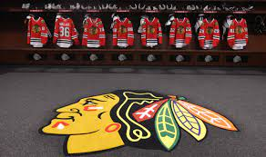

Introduction
Welcome to my personal page! My name is Sebastian Adams, and I am excited to share a bit about myself with you.
My Interests
Sports! As a chicago native, SPORTS(!) play a large part of my life. It's not uncommon for people to refer to me as the number one fan of the Chicago Blackhawks. People sometimes say I talk to much about too much, but I disagree.
My Favorite Music
Without a doubt, my favorite music genre is 90s country music. I just think no one did it better than Tim Mcgraw!"
My Favorite Restaurants
Here's a picture from one of my favorite restaraunts. I shouldn't speak specifics (due to the nature of my visit when I first ate here) but I'm sure it would be safe to just post a picture of my food.. Right? [Flag 2: "yummy pasta"]

My Favorite Car!
An iconic example of human engineering... The Pontiac Aztek. There has never been a more attractive car ever made. My opinion won't change, so don't even try.